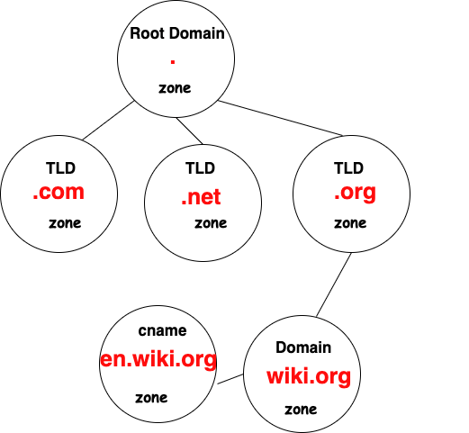

2.4 - פרוטוקול DNS - הרצאה
פרוטוקול DNS - מערכת ניהול שמות דומיינים¶
למה צריך את ה-DNS?¶
ה-DNS (Domain Name System) הוא אחד מהמרכיבים החשובים ביותר באינטרנט. כדי להבין את תפקידו, כדאי שנדמיין את המצב שבו היינו צריכים לזכור את כתובת ה-IP של כל אתר אינטרנט אליו היינו רוצים לגשת. למשל, אם היינו רוצים לגשת לאתר של גוגל, היינו צריכים לזכור את כתובת ה-IP של גוגל, שהיא לדוגמה: 172.217.16.196.
זכור את כל כתובת ה-IP הזו לכל אתר ברשת – זה לא מעשי! לכן נוצר ה-DNS, שמאפשר לנו להמיר שמות דומיינים (למשל google.com) לכתובות IP בצורה אוטומטית. למעשה, ה-DNS פותר את הבעיה של זיהוי השרתים ברשת בלי הצורך לזכור את כתובת ה-IP שלהם.
איך זה עובד?¶
כאשר אנחנו מקלידים דומיין בדפדפן, לדוגמה google.com, המחשב שלנו לא יודע ישירות מה ה-IP של אתר זה. הוא שולח בקשה לשרת DNS כדי למצוא את ה-IP המתאים לדומיין. שרת ה-DNS מחזיר את כתובת ה-IP הנכונה, והמחשב מתחבר לשרת האתר כדי להציג לנו את הדף.
איך מתבצע החיפוש ב-DNS?¶
ה-DNS מחולק למספר שכבות ותחומים, כל אחד מהם מנוהל על ידי שרת DNS אחר. לדוגמה, אם נרצה למצוא את ה-IP של האתר www.google.com, הפעולה תהיה כך:
- תחילה, נשלחת בקשה לשרת DNS מרכזי, כמו השרת של גוגל (8.8.8.8), שיפנה אותנו לשרת DNS שמנהל את תחום
.com. - השרת של
.comיפנה אותנו לשרת DNS שמנהל את התחום שלgoogle.com. - לאחר מכן, השרת של
google.comיודע כיצד להמיר את הדומייןwww.google.comלכתובת ה-IP המתאימה.
ה-DNS מחלק את השמות לכמה תחומים על פי מבנה היררכי, וכל תחום (zone) מנוהל על ידי שרת DNS אחראי.

סוגי בקשות ב-DNS¶
ישנן מספר בקשות שניתן לשלוח לשרת DNS, בהתאם לסוג המידע שאנחנו מחפשים:
-
בקשת A: זו הבקשה הנפוצה ביותר. אנחנו שולחים שם דומיין, כמו
youtube.com, והשרת מחזיר את כתובת ה-IP של האתר.- דוגמה: אם נרצה לדעת את כתובת ה-IP של
google.com, שלחנו בקשה מסוג A, והשרת יחזיר את ה-IP המתאים. -
בקשת PTR: בקשה שבה אנחנו שולחים כתובת IP ומבקשים לקבל את הדומיין המתאים לה.
-
דוגמה: אם יש לנו כתובת IP ואנחנו רוצים לדעת לאיזה דומיין היא שייכת, נשלח בקשת PTR.
-
בקשת MX: בקשה שמחזירה את ה-IP של שרת המייל של הדומיין.
-
דוגמה: אם נשלח בקשה מסוג MX עבור
google.com, השרת יחזיר את ה-IP של שרת המייל של גוגל.
- דוגמה: אם נרצה לדעת את כתובת ה-IP של
חלוקה לאזורים (DNS Zones)¶
ה-DNS עובד על פי חלוקה לאזורים, כך שלא כל השרתים בעולם צריכים לשמור רשומות של כל הדומיינים. כל דומיין בעולם מחולק לתת-תחומים, ולכל תחום יש שרת DNS אחראי.
למשל, אם נרצה לרזולב את הדומיין www.google.com, נשלח תחילה בקשה לשרת DNS מרכזי שיפנה אותנו לשרת DNS שמנהל את תחום .com, ואז לשרת DNS של google.com שידע לפנות אותנו לשרת של www.
Sub-domains¶
דומיינים לא חייבים להיות רשומות בודדות. דומיינים יכולים להכיל תתי דומיינים, שנקראים sub-domains. לדוגמה, mail.google.com ו-drive.google.com הם תתי דומיינים של google.com. כל אחד מהם יכול להחזיק כתובת IP שונה.
איך רושמים דומיין?¶
כדי לרשום דומיין, יש לקנות אותו מספק שירותי DNS, שהם לעיתים קרובות חברות גדולות המפעילות שרתי DNS עולמיים. בעולם יש מספר ספקי DNS גדולים, ולכן יש מונופול מסוים בתחום הזה.
כלי nslookup לבדיקת DNS¶
נוכל להשתמש בכלי nslookup כדי לבדוק את המידע שנמצא ב-DNS עבור דומיינים שונים. לדוגמה, כדי לבדוק את ה-IP של דומיין google.com, ניתן להריץ את הפקודה:
הפקודה תחזיר את כתובת ה-IP של הדומיין.
זיכרון cache של DNS (DNS Cache)¶
המערכת שלנו שומרת cache של שאילתות DNS שבוצעו כדי לחסוך זמן ולמנוע ביצוע חיפושים מחדש. כל פעם שאנחנו פונים לדומיין מסוים, ה-DNS נשאר בcache במחשב שלנו לתקופה מסוימת. זה מקטין את העומס על שרתי ה-DNS ומזרז את הגישה לאתרים.
לצפייה בcache DNS שלנו, נוכל להריץ את הפקודה הבאה:
אם ברצוננו לנקות את הcache, נוכל להשתמש בפקודה:
קובץ Hosts¶
בנוסף לcache של DNS, ניתן גם להגדיר רשומות DNS באופן ידני במחשב שלנו. לדוגמה, בקובץ hosts ב-Windows (במיקום C:\Windows\System32\drivers\etc\hosts), נוכל להוסיף רשומות DNS מותאמות אישית.
אם נרצה להוסיף רשומה שתפנה את הדומיין hello.world לכתובת ה-IP שלנו, נוסיף לקובץ את השורה הבאה:
לאחר שמירת הקובץ, נוכל לגשת לדומיין hello.world דרך הדפדפן, והמחשב שלנו יפנה אותנו ל-IP המקומי שלנו (127.0.0.1).
DHCP ו-DNS¶
כאשר אנחנו מתחברים לרשת, השרת DHCP (Dynamic Host Configuration Protocol) בדרך כלל מספק לנו גם את כתובת ה-DNS. זה מאפשר למחשב שלנו להשתמש בשרת DNS שמוגדר באופן אוטומטי, ובכך לא נצטרך להגדיר את השרתים באופן ידני.
לדוגמה, בבתים רבים הראוטר הביתי מהווה את השרת DNS, והוא בדרך כלל מציין את ה-IP של ספק האינטרנט או את השרת DNS של גוגל (8.8.8.8).
פרוטוקול UDP ו-פורט 53¶
ה-DNS עובד על גבי פרוטוקול UDP (User Datagram Protocol) ולא TCP. זה נעשה מכיוון ש-DNS צריך לפעול במהירות ולא צריך להיות תמיד אמין כמו בפרוטוקולים אחרים. בדרך כלל, שאילתות DNS הן קטנות מאוד ולכן UDP מתאים יותר.
ה-DNS משתמש בפורט 53 עבור כל הבקשות. כל שרת DNS מאזין לפורט זה ומטפל בבקשות המגיעות אליו.
סיכום¶
ה-DNS הוא מרכיב חיוני באינטרנט, המאפשר לנו להמיר שמות דומיינים לכתובת IP בצורה פשוטה ואוטומטית. כל האתרים שאנחנו ניגשים אליהם ברשת מחייבים את השימוש ב-DNS כדי שיתאפשר לנו למצוא את השרתים שמפעילים את הדומיינים הללו. באמצעות בקשות כמו A, PTR ו-MX, אנחנו יכולים לבצע חיפושים מדויקים ולקבל את המידע הנדרש.